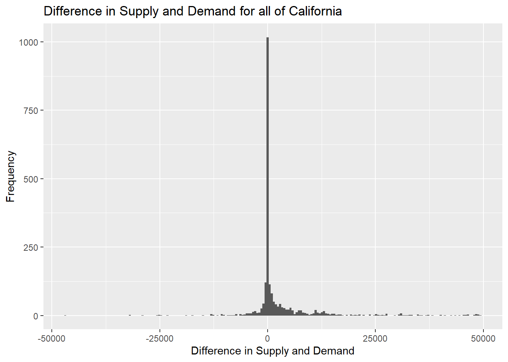
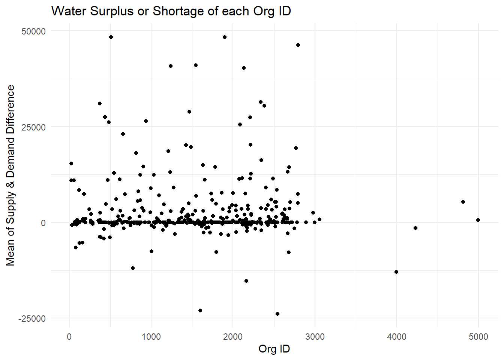
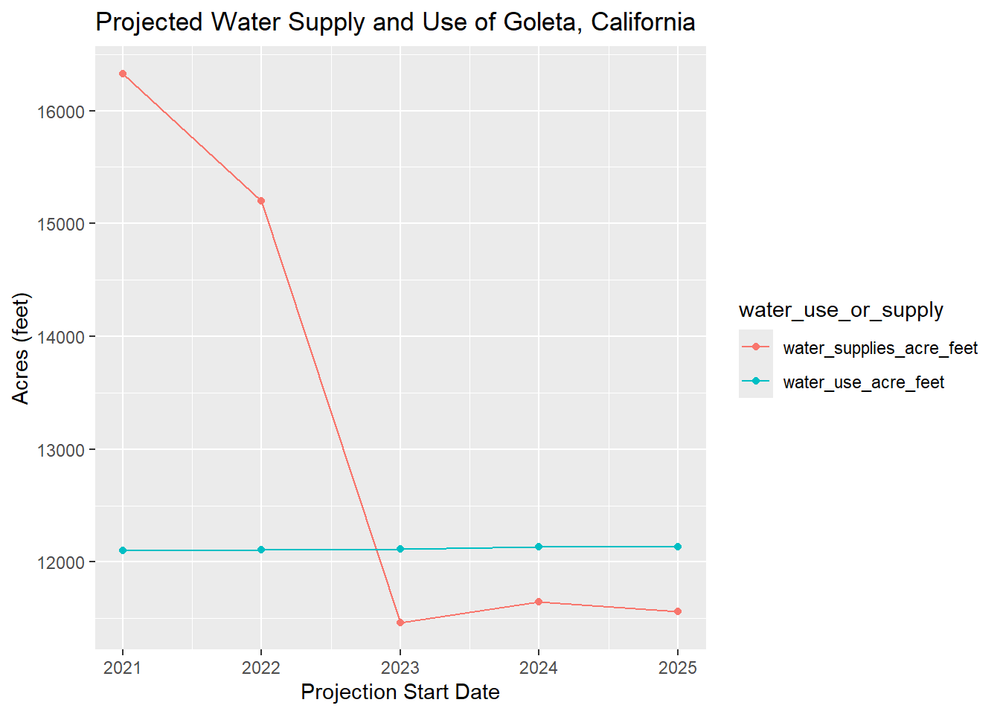
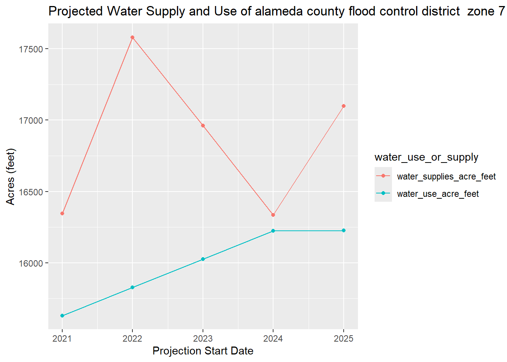
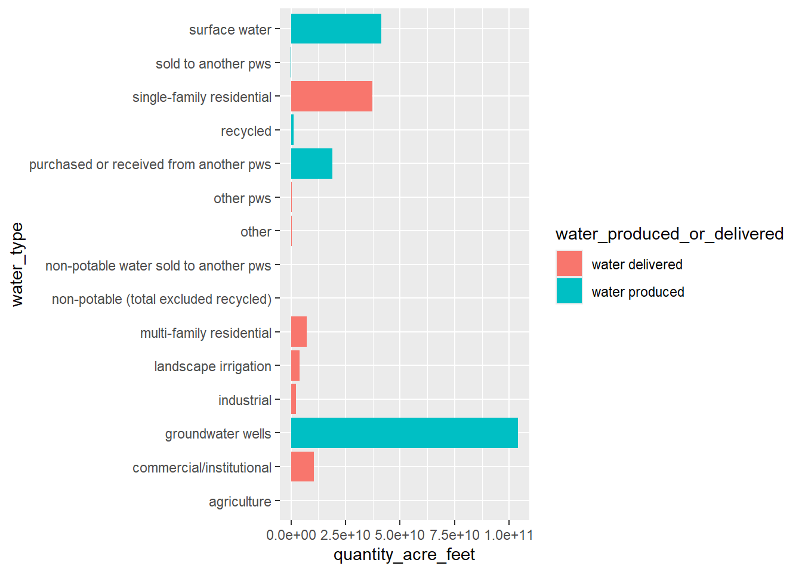
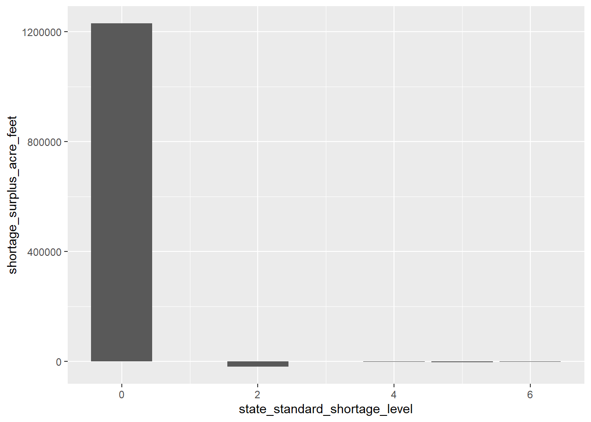

library(tidyverse)
library(here)HW2-Exploration
Exploration of CalDrought Capstone Data
Load libraries
Load data
water_shortage <- read_csv(here("data", "actual_water_shortage_level.csv"))
five_year_shortage <- read_csv(here("data", "five_year_water_shortage_outlook.csv"))
historical_production <- read_csv(here("data", "historical_production_delivery.csv"))
monthly_water_shortage <- read_csv(here("data", "monthly_water_shortage_outlook.csv"))
source_name <- read_csv(here("data", "source_name.csv"))
metadata <- read_csv(here("data", "metadata.csv"))
population <- read_csv(here("data", "population_clean.csv"))
five_metadata <- read_csv(here("data", "five_year_outlook_data_dictionary.csv"))Meta Data
Let’s first go through every dataframe individually, starting with the meta data. I shouldn’t have to write any code. I will just add markdown to keep track of variables that are more than meets the eye.
- Shortage Type - Dataframe: “monthly_water_shortage”, whether or not surplus/shortage has action, such as reduction or augmentation
- Acre Feet - DataFrame: “monthly_water_shortage”, volume of surplus/shortage in acre-feet
- Water shortage stage - Describes water shortage “stage”, I don’t think data is available in any dataframes. From metadata you need to take from API
- Shortage greater 10 percent - TRUE/FALSE logical if it greater than 10 percent, again don’t have data available, need to get from API
- PWSID - Public Water System Identification Number
- Produced or delivery - DataFrame: “historical_production”: Whether water is produced or delivered
- Population - DataFrame: “population_clean”, population using drinking water
Now let’s explore our DataFrames
Five Year Shortage
From the FlowWest GitHub page about the data: This table provides anticipated annual potable water levels (both surplus and shortage) with shortage actions and without shortage actions for five years based on the five driest consecutive years on record.
Looking at the DataFrame, under column PWSID, they can have more than one ID representing the public water system. Is there a way to only have one PWSID per row?
The most important columns/variables in this DataFrame are water_use_acre_feet and water_supplies_acre_feet. Some questions that come up from this dataframe are as follows:
- Is the projected supply meeting the projected demand?
- How many PWSID’s are meeting the demand in each city?
- Are there specific cities that meed the supply/demand more than other?
Creating supply/demand difference column & plotting it
# Explore five_year_shortage DataFrame
length(unique(five_year_shortage$supplier_name))[1] 439# There are 439 unique suppliers in DataFrame
# Create new column that is difference between supply and demand
five_year_shortage$supply_demand_diff <- five_year_shortage$water_supplies_acre_feet - five_year_shortage$water_use_acre_feet
# There are outliers, let's filter them out for an initial histogram plot
five_year_shortage <- five_year_shortage %>%
filter(supply_demand_diff > -50000 & supply_demand_diff < 50000)
ggplot(five_year_shortage, aes(supply_demand_diff)) +
geom_histogram(bins = 200) +
labs(x = "Difference in Supply and Demand",
y = "Frequency",
title = "Difference in Supply and Demand for all of California")
# A positive number means there is a surplus of waterPlotting each Org ID’s water surplus or shortage
# Plot Org Id water surplus and shortage
five_year_group <- five_year_shortage %>%
group_by(org_id) %>%
summarize(mean_diff = mean(supply_demand_diff))
ggplot(five_year_group, aes(x = org_id, y = mean_diff)) +
geom_point() +
labs(x = "Org ID",
y = "Mean of Supply & Demand Difference",
title = "Water Surplus or Shortage of each Org ID") +
theme_minimal()
Plotting Goleta, California Water Use and Supply
# Let's take a look at projections for Goleta
five_year_goleta <- five_year_shortage %>%
filter(org_id == 1068) %>%
pivot_longer(cols = starts_with("water"),
names_to = "water_use_or_supply",
values_to = "acre_feet") %>%
ggplot(aes(x = forecast_start_date, y = acre_feet, color = water_use_or_supply)) +
geom_point() +
geom_line() +
labs(x = "Projection Start Date",
y = "Acres (feet)",
title = "Projected Water Supply and Use of Goleta, California")
five_year_goleta
Make a function that plots Org ID surplus and shortage
surplus_shortage_fun <- function(id){
five_year_shortage %>%
filter(org_id == id) %>%
pivot_longer(cols = starts_with("water"),
names_to = "water_use_or_supply",
values_to = "acre_feet") %>%
ggplot(aes(x = forecast_start_date,
y = acre_feet,
color = water_use_or_supply)) +
geom_point() +
geom_line() +
labs(x = "Projection Start Date",
y = "Acres (feet)",
title = paste("Projected Water Supply and Use of", five_year_shortage$supplier_name))
}
# View Ventura's water use and supply
surplus_shortage_fun(2158)
Historical Production
From the FlowWest GitHub page: This table provides production and delivery data by water system and water type. These data were reported through the Electronic Annual Report (eAR) and published on the California Open Data Portal. The data included in this table represent a subset of the data included in the eAR. Beginning in 2023, the reporting of these data transitioned to the SAFER Clearinghouse. The SWB is working on appending data from 2023 onwards, but this is not currently available.
This is by far the biggest DataFrame with over 900,000 observations. Variables of interest would be water_system_name, water_produced_or_delivered, water_type, and quanitity_acre_feet. This data represents actual values observed. Some questions that come up are the following: - What water_type is using the most water? - Is there a water_system_name, “place”, that is using the most water? - Can we join this with our population DataFrame to view where water is being used the most/least?
# Data Exploration
# The metric we are interested in is quanitity_acre_feet
# hist_prod_filter <-
historical_production %>%
drop_na(quantity_acre_feet) %>%
group_by(water_produced_or_delivered, water_type) %>%
summarize(quantity_acre_feet = sum(quantity_acre_feet)) %>%
arrange(desc(quantity_acre_feet)) %>%
ggplot(aes(y = quantity_acre_feet, x = water_type, fill = water_produced_or_delivered)) +
geom_col() +
coord_flip()
Monthly Water Shortage
From the FlowWest GitHub page: This table provides forecasted monthly (and annual) potable water shortage (or surplus) with and without shortage actions for a dry year. The Annual Water Supply and Demand Assessment (AWSDA) reports this data. All data reported through the AWSDA are available on the DWR’s Water Use Efficiency (WUE) portal. In the most recent AWSDA guidance, see pages 30-35 for information about the data elements in the monthly_water_shortage_outlook table. Methodology guidance is included in this report, though it is not implemented consistently across urban water suppliers.
Variables/columns of interest are supplier_name, supplier_type, shortage_surplus_acre_feet, and shortage_surplus_percent.
# Monthly Water Shortage Exploration
# I see we have NAs for PWSID, lets see how many we have
monthly_dropna <- monthly_water_shortage %>%
drop_na(pwsid) %>%
drop_na(shortage_surplus_acre_feet)
# View types of supplier
unique(monthly_dropna$supplier_type)[1] "retail" "combined" "wholesale"# View how many PWSIDs we have
length(unique(monthly_dropna$pwsid))[1] 212ggplot(monthly_dropna, aes(x = state_standard_shortage_level, y = shortage_surplus_acre_feet)) +
geom_col()
Source Name
From the FlowWest Github page: This table summarizes the facility type, status, and location by public water system and facility. These data are from SDWIS and processed within the SAFER Clearinghouse. These data are assigned through facility permitting process and are not user reported, and often validated through on-the-ground field visits. The data are filtered to include the most recent data; out of date data are not included. Currently, no documentation has been published for these data.
Variables/columns of interest are source_facility_name, source_facility_type, water_type and lat/long columns.
Actual Water Shortage Level
From the FlowWest GitHub page: This table reports the monthly state standard shortage level by urban retail water suppliers, which are generally defined as agencies serving over 3,000 service connections or deliveries 3,000 acre-feet of water annually for municipal purposes. These data are collected by the State Water Resources Control Board through its monthly Conservation Reporting and the data included in this dataset represent a small component of the larger dataset. Information about these reports can be found on the Water Conservation Portal, which is no longer active, and the full data (which represents the source data for this dataset) are available on the California Open Data Portal. Beginning in 2023, the reporting of these data transitioned to the SAFER Clearinghouse.
Variables/columns of interest are supplier_name and state_standard_shortage_level. The shortage levels range from 0-5 with 0 being no water shortage. I looked for documentation on how they calculate it, but couldn’t find anything definite.
Answer Questions
What have you learned about your data? Have any potentially interesting patterns emerged? I have quite a few dataframes that I am working with. I was mostly focused on the projected five year water shortage data. There aren’t many things that I can measure from this dataframe as the main metrics are water supply and water use in acres feet. It is hard to look at the trends of the entire dataframe. You need to filter to specific locations to easily view the trends. I made a function that is able to specify location by
org_id.In HW1, you outlined some questions that you wanted to answer using these data. Have you made any strides towards answering those questions? The questions I asked from HW1 were questions my clients wants to have answered. I have not made any strides towards answering these yet. I have to work with the other data sets more and possibly merge them together. Since the last homework, questions have been changed/introduced. Some of them considered high priority by the client are as follows:
- Please describe how you would calculate supply and demand changes over time across California (local, regional, state-wide)? - - Are the following questions relevant in addressing this question:
- How is my change in supply/demand relative to those around me?
- Is the rate of supply and/or demand increasing or decreasing?
- What are the factors that cause my supply/demand to change?
- How is the population in my area changing over time and how is this affecting the demand?
- How much water does agriculture/big industrial sites consume in the area? How is this changing the demand pattern?
For the purpose of this project and class, I would like to possible answer some of these questions comparing past, present, and projected data sets.
- What challenges do you forsee encountering with your data? I think it will be a challenge making interesting plots. Like Annie pointed out, my client is looking for more of an analysis of the data which might not include interesting plots. I will have to come up with a specific question that can not only answer one of my client’s questions, but also tell an interesting story for the class.